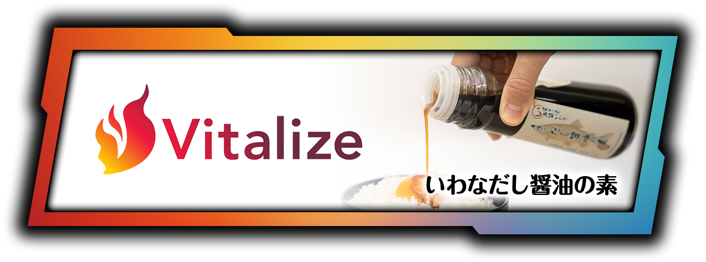
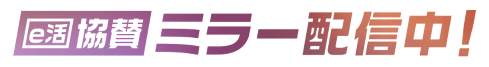

sponsor
五箇いわな手作り
だし醤油の素

e活の協賛大会・ミラー配信でご覧いただいた商品のご紹介ページです。
ご提供は、長野県小海町で「IT×地方創生」に取り組む 株式会社Vitalize 小海支社様。
八ヶ岳の澄んだ湧水で育てたイワナから生まれた、だし醤油の素です。

商品について
八ヶ岳の澄んだ湧水で育ったイワナを贅沢に使用した「五箇いわな手作りだし醤油の素」。
瓶にお好みの醤油を注ぐだけで、香ばしく旨みたっぷりの『だし醤油』が完成します。
卵かけご飯はもちろん、冷ややっこやうどん、炒飯にも。さまざまな料理を格上げする万能な一品です。


瓶にお好みの醤油を注ぐだけで、香ばしく旨みたっぷりの『だし醤油』が完成します。
株式会社Vitalize 様について
「少子高齢化」や「東京一極集中」といった日本の課題を、事業を通じて解決することを目指す企業様です。
システム開発などのITエンジニア事業を軸としながらも全国に支社を展開し、
長野県の小海支社では豊かな自然環境を活かしたイワナやチョウザメの養殖を行うなど、
まさに“現場からの地方創生”に本気で取り組まれています。


長野県の小海支社では、豊かな自然環境を活かしたイワナやチョウザメの養殖を行っています。
e活 とのご縁
「ゲームの熱狂を、地域の力に。」
この度、Vitalize様より、e活プロジェクトへのご支援として本商品をご提供いただきました。
いただいたお品物は、e活が協賛するコミュニティ大会での特別賞品や、
公式ミラー配信パートナーのVTuberによる食レポ企画などで、大切に活用・発信させていただきます。
ITと地域資源の掛け合わせで挑戦を続けるVitalize様の想いを、
eスポーツやVTuberコミュニティの熱量に乗せて全国へ届けていきます。
ご提供いただいた経緯は、 お知らせ「【共同協賛のお知らせ】株式会社Vitalize 小海支社様より…」 に掲載しています。
オンラインでご購入いただけます。
購入する（ECサイト TADORi）
Vitalize 小海支社様が、社会貢献に配慮した商品を扱うマーケットプレイス「TADORi」に出品されています。
価格・送料・在庫はリンク先をご確認ください。
店頭でもお求めいただけます（2026年7月時点・公式サイト掲載）
- プチマルシェこうみ
- 八峰の湯
- 道の駅八千穂高原
※ ご購入・お支払い・配送に関するお問い合わせは、リンク先の窓口へお願いいたします。
※ e活（A&L project 株式会社）は大会への協賛と配信での紹介を行っており、商品の販売は行っておりません。
Vitalize 様の発信

配信でこのロゴを見かけた方へ
e活の協賛大会は、大会の公式チャンネルに加えて、応援VTuberそれぞれのチャンネルでもミラー配信されています。
その画面に表示されていたのが、このバナーです。
配信を見ていただいたこと、そしてこのページまで来ていただいたこと、ありがとうございます。